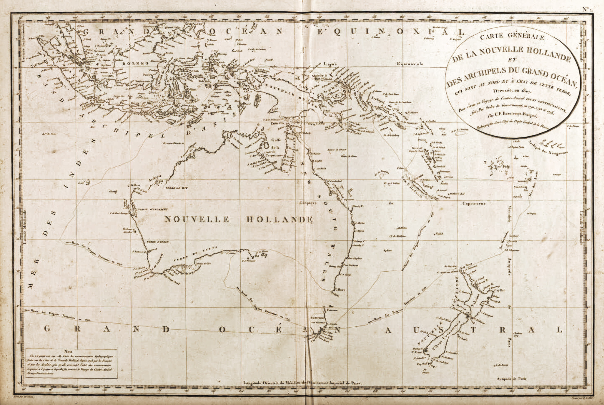

Introduction
This project explores the distinctive legacy of French place naming along Australia’s coastlines, tracing how these toponyms—many still visible on modern maps—reflect the layered histories of European exploration. Set against the backdrop of First Nations peoples’ deep and enduring connection to Country, the French naming practices sit alongside those of Dutch and British navigators, forming a complex palimpsest of meaning and memory.
By focusing on the over 670 sites named during the expeditions of d’Entrecasteaux and Baudin, the study brings to light a unique French perspective that enriches our understanding of Australia’s coastal history and its entangled global and local contexts.
The research in this website was supported by the RGSSA, the WAHF, …
Map by Beautemps-Beaupré, 1807
Map by Freycinet, 1812